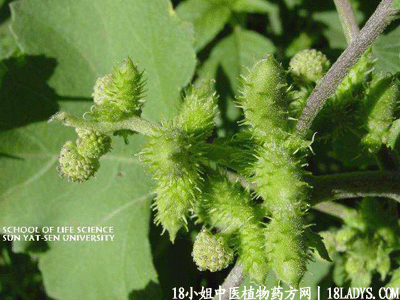

(本文解释权归中药材天地网兄弟站-18小姐中医植物药方网所有,如需转载请注明出处)

古籍名：苔耳《神农本草经》。
别名：痴头婆、白痴头婆、痴头猛。
植物名：苔耳。
生长环境：本品为一年生草本。生于旷地，路旁或田野间的野生植物，略耐干旱。
分布：广东省各地多见，山区则少；北方温带地区普遍生长。
入药部分：全草。
采集期：夏、秋。（秋后药力减）
自采地点：山岗、郊外。
性味：性平、味微苦。
功能：祛风，散毒。
主治、用量和用法：1、头凤晕：干用5钱至1两、清水煎服。
2、夹色：干用1至2两，清水煎服；
3、湿热下痢：干用1至2两，清水煎服；
4、红云血癣：生用10斤、洗净切碎，水适量，煎十小时去渣，再煎成膏状，分为1日二次，用糖调服。
5、疥疮：干用适量，煎水外洗患处。
附录：（根）
1、治痰火核：干根2两，猪瘦肉适量，清水煎服。
2、治白浊：干根1至2两，猪瘦肉适量，清水煎服。
（果）治感冒发热，配伍用。
（方歌）苍耳草根各逞能，草治头晕兼痢频，疥疮煎汤淋患处，亦治血癣夹色人，根疗白浊痰火核，瘦肉同煎功如神。
参考资料：《现代实用中药》本品成分含脂肪39%，树脂3.3%，黄色苍耳昔39%，及维生素C等。效果：1、子为发汗、利尿排毒药，有镇痉痛作用，用于肌肉神经麻痹、梅毒、麻风、关节痛、疟疾、水肿、虫伤等。2、叶、茎治癣疥、湿疹、头痛、四肢拘挛痛、风湿周痹、恶肉死肌、膝痛、溪毒、瘰疠、疥疮。
《中国药用植物图鉴》最近研究。全草对麻风病及恶性痢疾有显著疗效。
《中医杂志》（1958.1）内载：苍耳子合剂治疗慢性鼻窦炎50例，无效者仅占16%，处方苍耳子2斤、卒夷6两，碾碎，然后加菊花2两、茜草2两、艮花2两，煎熬约5小时，倾出药汁后，加水于药渣中煎4小时倾出药汁，如此共计4次过滤，将药汁蒸发浓沸（起大泡时）加入蜂蜜半斤搅匀，约得600毫升，冷藏，每服5毫升，一日三次，连用1至2月。
《中医杂志》（1958.11）江西省麻风病院报导：以苍耳草治麻风人11例，无1例无效或恶化。方法是用苍耳草制成流浸膏，埋成丸剂，每服4两，日服1次，逐渐加，最高日服16两，分2次服。一般病人5至7天即开始进步。
《江西中医药》（1960.4）内载：用苍耳草治疗结核，在治疗过程发现对结核性脓胸亦有显明疗效。
《中医杂志》（1960.6）登丰县医院报告：误食苍耳中毒病例，皆呈现头痛，头晕，腹胀，恶心，呕吐等症状。严重的呈现昏迷状态，不能转动。体检：心津较快，腹呈中等度膨胀，肠鸣减弱，体温、血压、血象均正常，其他无阳性体症。（中医杂志编者介绍中医治疗方法）1、中毒不久，可用吐药或泻药清理胃肠道。2、中药解毒：“三豆汤”加甘草“二花汤”“艮乔汤”均克。一般情况可用甘草、沙参、艮花、黄连、云苓煎服。或用鲜芦根、绿豆、艮花、菊花、甘草煎服。与出现现象可用甘草、远志、沙参、血余炭、三七面（冲）煎服。有烦躁用龙胆草、甘草煎服。其他如地浆水、蜂蜜、生绿豆、甘草水、豆浆可分别多服。3、针法：解毒取穴：曲池、三阴交，牙关紧闭取颊车、合谷，呕吐腹泻取中浣、内关、足三里，昏迷取人中、承浆，呼吸苦难取内关。一般可多刺足三里。
又据河北省卫生防疫站实验报导：初步证明苍耳子毒性物质可溶于水，并且不耐高温。若用水浸泡后弃液，则可减少或消失其毒性。又若经过高热（炭化）处理后，也可破坏其毒性。
《中医杂志》（1959.12）报导：苍耳草治疗过敏性鼻炎，有效率达60.7%，和通常应用其他药物效果相仿。胆对过敏性副鼻窦炎、鼻息肉、慢性肥厚性鼻炎的疗效不够满意。有效例见用药后鼻通气转好，鼻痒，喷嚏减少，鼻腔分泌物减少。
《中医杂志》（1958.11）江西省麻风病院以鲜苍耳草浓煎为丸治麻风病，一般病人于第六天即开始进步，根据100例分析，显著进步占72.72%，进步者占27.27%。
（广州中医学院报导）该院与曲江，英德等血吸虫病防治站合作，采用苍槟合剂治疗中期血吸虫病95例，一般症状消失或减轻，大便检查（沉卵三次）阴性率70～90%，经三个月追踪检查，阴性率一直保持75～80%，证明苍槟合剂对体内血吸虫可能有杀灭或抑制作用。处方：苍耳全草两半、枣儿槟榔两半，炼为水剂，每日作2次空腹分服。二十天为一疗程。
《湖北验方集锦第一集》主治血丝虫病方：苍耳子20粒、苦养6钱、共研末，同元肉做粑，烧食，内服，服五次有效。
《河北中医验方汇选》介绍，治白蛇缠腰（缠腰丹）验方：苍耳子1两、冰片2分，将苍耳子用土炒至黄褐色，研为极细末，再加入冰片研匀用香油调成糊状，抹患处，早晚各一次，约十三天全愈。 (本文解释权归中药大全所有,如需转载请注明出处)
如果您想了解更多关于苍耳子，为您推荐一下内容↓↓↓↓